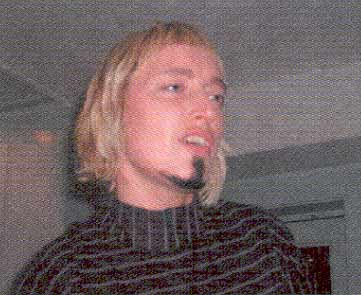

| Februar 2003 |

| GRITT GAV DEN GAS! | |
| Skribent | Sune |
| Hvad | Grrr---it |
| Tid | Kafe Knud |
På programmet var premieren på hendes nyeste kortfilm "The Dear Hunter", Knud Vesterskovs nyeste essay "Fuck for peace" blev læst højt og der var performance ved Dennis Agerblad, Miss Fish og April, Der lavede en speciel julestrip. Endelig var der mulighed for at få sat skæg og bakkenbarter, læbestift og kindrødt på i døren af dragking Markus Hit.
Overskuddet gik til det nyindrettede Kafe Knud og tankerne gik ifølge flyeren på "den kommende finanslov, hvor forholdene for hiv-smittede forhåbentligt ikke forringes men gerne forbedres".
Print denne side